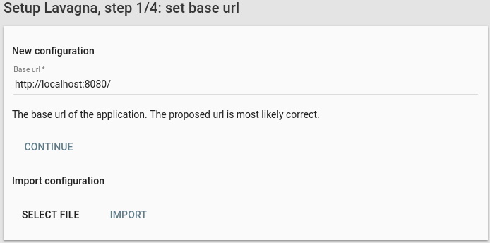
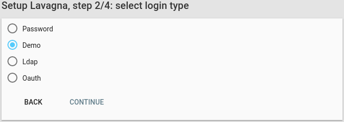
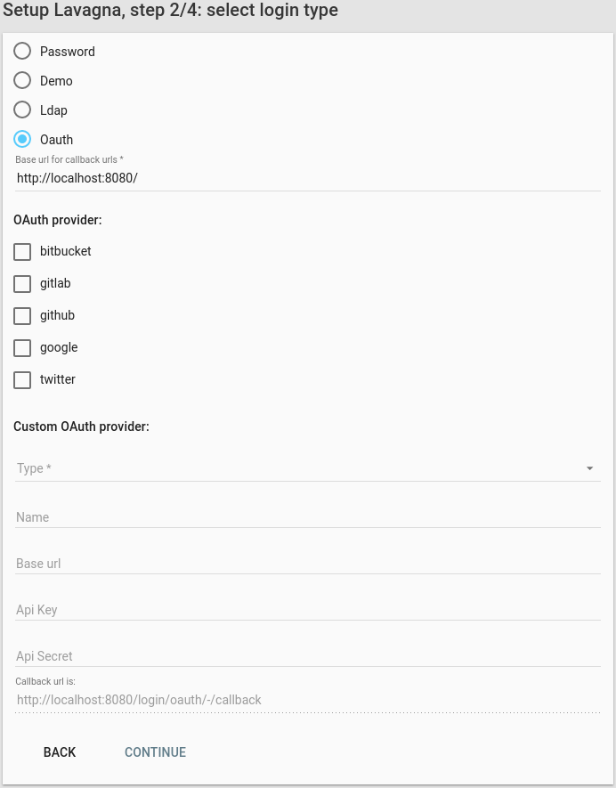
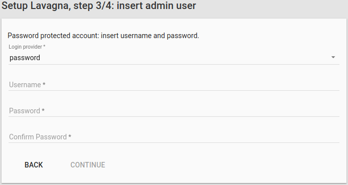
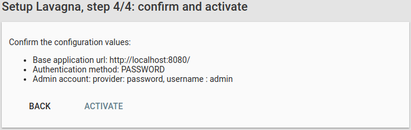

- 2.3Setup
- 2.3.1Step 1, Base url or import
- 2.3.2Step 2, Login provider configuration
- 2.3.2.1Demo provider
- 2.3.2.2Ldap provider
- 2.3.2.3Mozilla persona provider
- 2.3.2.4Oauth provider
- 2.3.3Step 3 Insert administator
- 2.3.4Step 4 Confirm
2.3Setup
2.3.1Step 1, Base url or import
After successfully launching the application, go to http://your-lavagna-install/setup .
The following page will be shown:

- If it’s a new install, confirm that the base url is correct and click Next
- If it’s an import, select the exported file and click Import. The import process can take a noticeable amount of time.
2.3.2Step 2, Login provider configuration
Lavagna does not store the user credentials by design: an external provider must be chosen. There are 4 possible choice:
- demo (use for test purpose only)
- ldap
- mozilla persona
- oauth
2.3.2.1Demo provider
The demo provider must not be selected in production, as the password is the username. It can be useful for a small test round for evaluating the product.

2.3.2.2Ldap provider
If the users are stored in a ldap directory (Active Directory is supported too), the ldap provider must be configured.

It requires a user that can query the directory (the Manager DN and Manager Password).
The query is composed by a base (Search base) and the filter (User search filter), where {0} is the placeholder for the username.
The configuration can be tested in the “Check ldap configuration” form.
2.3.2.3Mozilla persona provider
Mozilla Persona is the simplest external provider available to configure.

The default Audience value is most likely correct.
2.3.2.4Oauth provider
The application support 4 external oauth providers: bitbucket, github, google, twitter.

Select the oauth provider of the first account and provide the api key and secret. The provided callback url should be the correct one that must be provided.
See the documentation for:
- bitbucket
- github. Registration page is https://github.com/settings/applications/new
- google: the “Google+ API” must be enabled
2.3.3Step 3 Insert administator
In the third step, the administrator must be defined. Enter the username and click Next.

2.3.4Step 4 Confirm
Check the validity of the configuration data. Click on Activate: the configuration will be saved and the browser will go to the root of the application. Enter the username (and password if required).
